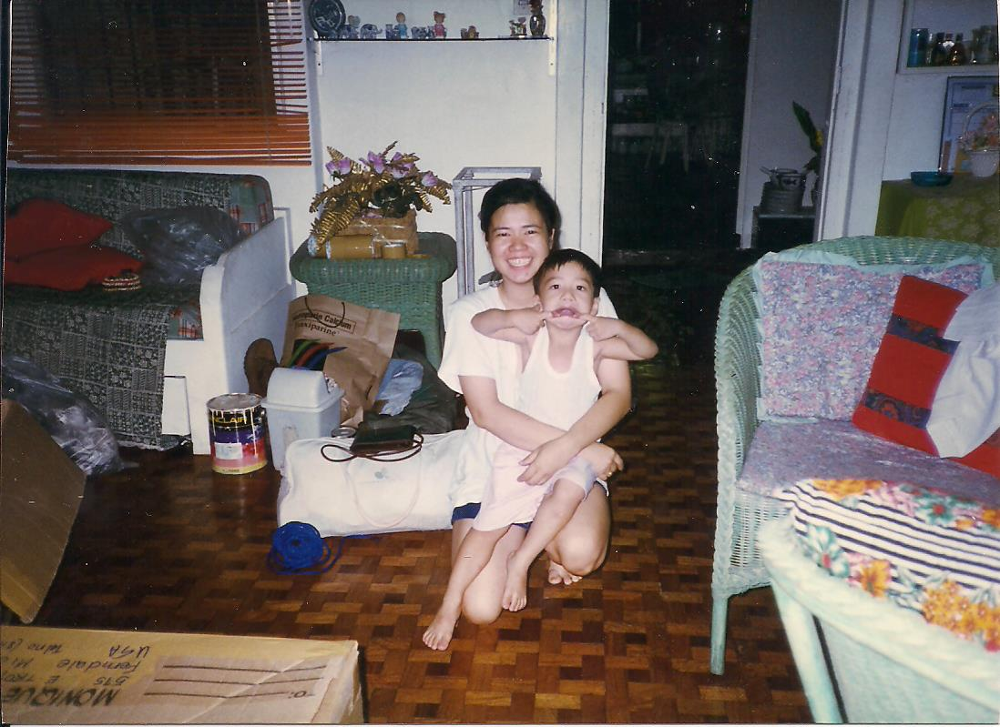
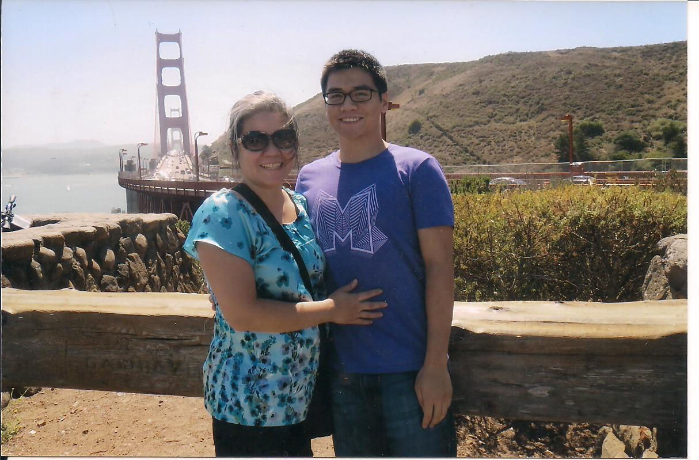

My mother and I taking a vacation in 2003, in San Francisco, California.
Coming to America: My Mother's Story
1986-1990
My mother attends University of the Philippines and graduates with a Bachelor of Science degree in Nursing.
It was a good course because it definitely gives you a career after 4 years in college. And a lot of the nurses in the Philippines at that time would get jobs in the states fairly quickly.
1994
August 6 - I was born in Quezon City, Philippines.
1995
August 6 - My mother arrives in the United States.
I was at Philippine General Hospital. We catered to the poorest of the Philippines. It was very sad to work there because you are very limited to what you can do. I worked in an oncology unit—a lot of cancer patients. There wasn’t a lot of things to go on. You were limited in what you know and what you do. So when the opportunity was there for me to go to the states, I took it even though I was gonna be separated from you.
The Process of Immigration
A visa is a travel document that allowed foreigners to travel to the United States for tourism, business, work, or study. There are several types of visas.
My mother applied for an H1A Visa. This is a work visa specifically made for registered nurses for temporary employment. It is a non-immigrant visa and is not for permanent residence.
At that time, there was still what we called the H1-A visa. That’s a working visa where, by law, a facility (a nursing home) would be able to hire foreign nurses because they could not hire American nurses. Nobody would work for them. So by law, they could give H1-A visas to hire foreign nurses to come work for them for a certain amount of time.
2000
My mother completes 5 years of residency and is able to apply for naturalization.
I had to learn how to drive. I had to learn how to take care of myself. You have to realize that in the Philippines, it’s not a given that an adult had to take care of himself, because of financial reasons. It wasn’t part of the culture that you were independent. When you lived by yourself, there must be something wrong with you. Unlike here, there’s pride in living on your own.

After my mom was able to apply for naturalization, she flew back to the Philippines and got me. She had not seen me in 5 years.
The Process of Naturalization
A permanent resident, or green card holder, of the United States has similar rights and responsibilities of a U.S. citizen, only they cannot vote. My mother had this status when she arrived in the U.S. After living here for 5 years, she was able to start the process of naturalization.
My mother had to take a test for naturalization. She had to demonstrate her ability to speak, read, and write English. On top of that, she had to take a test on America civics.
2001
After almost 6 years of living without me, my mother comes back to the Philippines and gets me. I arrive in the U.S. on March 16.
If you go to any inner-city hospital, you find one Filipino in there. It seems the personality of a Filipino fits a nurse. It’s like an observation. A lot of people think that way.
Working at Henry Ford Hospital
My mother worked as a Registered Nurse (RN) at Henry Ford Hospital in Detroit, Michigan. She worked in the Intensive Care Unit (ICU). ICUs are staffed by highly trained doctors and nurses that specialize in caring for critically ill patients. My mother worked with other Filipino nurses and made friends with them.
2002
We move from Ferndale to Rochester, Michigan. She moved us to Rochester in order to get me into a better school system. From here, both of us started becoming more and more americanized as we lived in the U.S.
That’s one thing as an immigrant—something that is unique to us is that you assimilate to a culture and keep the things that you want to keep from your culture that is unique and good. And drop the things that you don’t like like gossipping and putting other people down. So I don’t have a problem assimilating and becoming more americanized.
Life in America
For my mother, assimilating into American culture was no problem. She wanted to retain the good aspects of Filipino culture and learn the best ones from American culture, like being independent and assertive and being proactive about issues instead of accepting them at face-value.
You are more assertive. Especially at work. You become more independent. Taking care of yourself, living alone in an apartment, that takes a lot out of you. There’s nobody around. You’ve got to do this. That’s something that you realize—I’m an american now.

My mother and I in San Francisco, California, in September 2015 for her birthday.